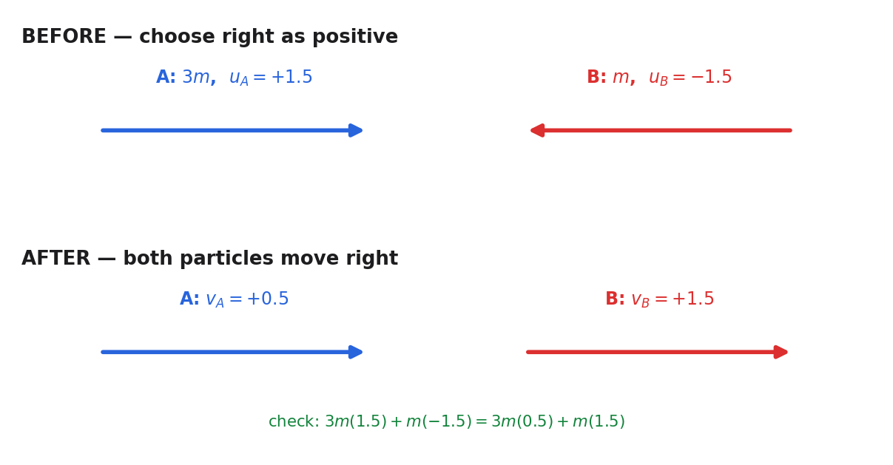

From the official paper. Two particles, A and B, are moving in a straight line in opposite directions towards each other on a smooth horizontal surface when they collide directly.
Particle A has mass \(3m\) kg and particle B has mass \(m\) kg.
Immediately before the collision, both particles have a speed of \(1.5\,\mathrm{m\,s^{-1}}\)
Immediately after the collision, the direction of motion of A is unchanged and the difference between the speed of A and speed of B is \(1\,\mathrm{m\,s^{-1}}\)
(a) Find (i) the speed of A immediately after the collision, (ii) the speed of B immediately after the collision. (5)
(b) Find, in terms of \(m\), the magnitude of the impulse exerted on B in the collision. (3)
(Total for Question 2 is 8 marks)
Lesson status: COMPLETED WITH PROMPTING · Source class: official WME01/01 Jan 2023 (packet Q1)
Teaching visual — signed before/after model.

Sense check: verify the signed momenta before and after impact and confirm that the reported impulse magnitude is positive.
Formula and strategy. During a direct collision with no external impulse along the line, total linear momentum is conserved: \(\sum mu=\sum mv\). Choose A’s initial direction as positive and keep velocities signed until the end. Then \(u_A=+1.5\), while B approaches from the opposite direction so \(u_B=-1.5\ \mathrm{m\,s^{-1}}\). Let A’s post-collision speed be \(x\). Since A continues in the chosen positive direction and the particles must move apart after their direct collision, B moves in the positive direction faster than A. The stated one-metre-per-second speed difference therefore gives \(v_A=x\) and \(v_B=x+1\).
Substitute masses and signed velocities:
\((3m)(1.5)+m(-1.5)=(3m)x+m(x+1)\).
The left side is \(4.5m-1.5m=3m\). The right side is \(3mx+mx+m=4mx+m\). Since \(m\) is a particle-mass parameter and is non-zero, divide throughout by \(m\): \(3=4x+1\). Subtract one to get \(2=4x\), then divide by four: \(x=\tfrac12\). Therefore \(v_A=x=\tfrac12\ \mathrm{m\,s^{-1}}\) and \(v_B=x+1=\tfrac32\ \mathrm{m\,s^{-1}}\).
The relationship between the final speeds must be tied to direction. Choosing A’s initial motion as positive makes B’s initial velocity negative. After impact A continues positive; the separating-particles interpretation used by the official route has B reversed and faster, so \(v_B=v_A+1\). Only then should conservation of momentum, \(\sum mu=\sum mv\), be populated. Cancelling the common positive parameter \(m\) after the full equation is visible prevents a mass ratio from disappearing. Solving gives A speed \(0.5\ \mathrm{m\,s^{-1}}\) and B speed \(1.5\ \mathrm{m\,s^{-1}}\). A diagnostic for the opposite assignment \(v_A=v_B+1\) is that it fails the source direction/separation model when checked against momentum. Transfer cue: draw signed before-and-after arrows before translating any stated difference of speeds.
Check-back. Initial momentum is \(3m(1.5)+m(-1.5)=3m\). Final momentum is \(3m(0.5)+m(1.5)=1.5m+1.5m=3m\), so conservation is exact. Both calculated velocities are positive, meaning B reverses direction while A continues more slowly; this is consistent with the signed algebra.
Choose a conservation check because the speed-difference condition alone cannot verify the signed momentum equation. Before impact, momentum is \(3m(1.5)+m(-1.5)=3m\). Afterwards it is \(3m(0.5)+m(1.5)=3m\), while the speed difference is also exactly one. Both particles now have positive velocity, so A’s direction is unchanged and B has reversed. This triple agreement is evidence that the sign convention was used consistently. The unsupported historical claim about a numerical learner slip remains excluded. The final labelled answers are A: \(0.5\ \mathrm{m\,s^{-1}}\); B: \(1.5\ \mathrm{m\,s^{-1}}\). On another collision problem, require conservation, stated relative-speed information and direction statements all to pass before accepting roots.
Definition and strategy. Impulse on a named particle equals that particle’s change in momentum: \(I_B=m(v_B-u_B)\). Direction must remain signed during the calculation; only after finding the signed impulse should “magnitude” convert it to a positive scalar. From part (a), \(v_B=+1.5=\tfrac32\ \mathrm{m\,s^{-1}}\), while before impact B moved opposite the chosen positive direction, so \(u_B=-1.5=-\tfrac32\ \mathrm{m\,s^{-1}}\).
Substitute into the impulse formula:
\(I_B=m\left[\tfrac32-\left(-\tfrac32\right)\right]\).
Subtracting a negative gives addition, so \(I_B=m(\tfrac32+\tfrac32)=m(3)=3m\ \mathrm{kg\,m\,s^{-1}}\). Since \(1\ \mathrm{N\,s}=1\ \mathrm{kg\,m\,s^{-1}}\), this is \(+3m\ \mathrm{N\,s}\) in the chosen positive direction. The question asks for magnitude, hence \(\lvert I_B\rvert=\lvert3m\rvert=3m\ \mathrm{N\,s}\), using \(m>0\).
Impulse is not the difference of speed magnitudes; its governing definition is the vector momentum change \(I=m(v-u)\). For B, the source-consistent signed values are \(u_B=-1.5\) and \(v_B=+1.5\ \mathrm{m\,s^{-1}}\). The difficult subtraction is therefore \(1.5-(-1.5)=3\), giving a directed impulse \(+3m\ \mathrm{N\,s}\). Only the final instruction ‘magnitude’ removes direction, leaving \(3m\ \mathrm{N\,s}\). This explains why adding two positive speeds happens numerically without replacing the definition by an unsafe \(m(v+u)\) rule. Diagnostic trap: subtracting the two positive speed magnitudes would erase B’s reversal and incorrectly produce zero. A future reversal problem should keep arrows and signs until after \(v-u\), then take an absolute value if the command requests magnitude.
Check-back. B’s momentum changes from \(-1.5m\) to \(+1.5m\), a total increase of \(+3m\), so both sign and size agree. By Newton’s third law, the impulse on A would have equal magnitude and opposite sign; indeed A changes from momentum \(4.5m\) to \(1.5m\), a change of \(-3m\). This independently checks the result without changing which particle the question names.
An independent system check comes from equal and opposite interaction impulses. A’s momentum changes from \(4.5m\) to \(1.5m\), hence \(\Delta p_A=-3m\); B’s change is \(+3m\). Their sum is zero, matching the absence of external horizontal impulse on the two-particle system. The unit conversion \(1\ \mathrm{N\,s}=1\ \mathrm{kg\,m\,s^{-1}}\) confirms dimensions. The final requested magnitude is \(3m\ \mathrm{N\,s}\), never a negative number. Diagnostic cue: if the two particle momentum changes do not cancel, revisit velocity signs before applying an absolute value, because magnitude can conceal the original error.